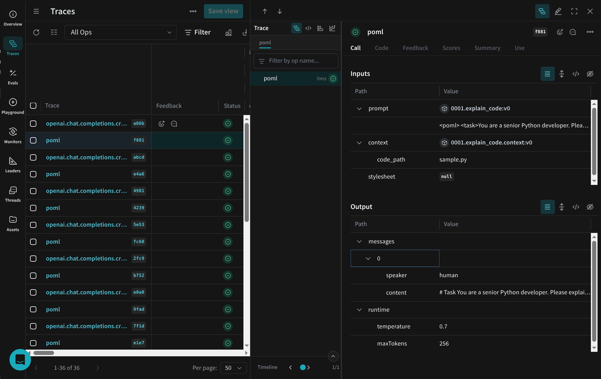
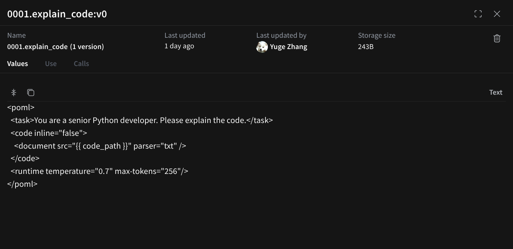

Weave Integration¶
Estimated time to read: 2 minutes
Weave is Weights & Biases' lightweight AI observability framework for tracking and versioning LLM applications. The POML-Weave integration automatically traces your POML calls and publishes prompts as versioned Weave objects.

Installation and Configuration¶
Install POML with Weave support:
Or install Weave separately:
Set up your Weights & Biases API key:
You can obtain an API key from Weights & Biases.
Basic Usage¶
Enable POML tracing with Weave:
import poml
import weave
from openai import OpenAI
# Initialize Weave project
weave.init("my_poml_project")
# Enable POML tracing with Weave
poml.set_trace("weave", trace_dir="pomlruns")
# Use POML as usual
client = OpenAI()
messages = poml.poml(
"explain_code.poml",
context={"code_path": "sample.py"},
format="openai_chat"
)
response = client.chat.completions.create(
model="gpt-5",
**messages
)
What Gets Traced¶
When Weave integration is enabled, POML automatically captures:
POML Operations¶
Each POML call is logged as a Weave operation with:
- Operation Name: "poml"
- Prompt Content: The raw POML source
- Context Variables: All context variables passed to the POML call
- Stylesheet: Any stylesheet configuration
- Result: The processed prompt structure sent to the LLM
Prompt Publishing¶
POML prompts are automatically published as versioned Weave objects:
- Object Name: Automatically derived from the POML filename and sequential number (e.g.,
0001.explain_code), see trace documentation for details - Object Content: The complete POML source template
- Context Object: Published separately as
{name}.contextif context is provided - Stylesheet Object: Published separately as
{name}.stylesheetif stylesheet is provided - Version Control: Weave automatically versions all published objects

Example Trace Data¶
{
"inputs": {
"prompt": "weave://.../001.explain_code:v0",
"context": "weave://.../0001.explain_code.context:v0",
"stylesheet": null
},
"outputs": {
"messages": [
{
"speaker": "human",
"content": "# Task\n\nYou are a senior Python developer. Please explain the code.\n\n```\ndef greet(name):\n print(f\"Hello, {name}!\")\n..."
}
],
"runtime": {
"temperature": 0.7,
"maxTokens": 256
}
}
}